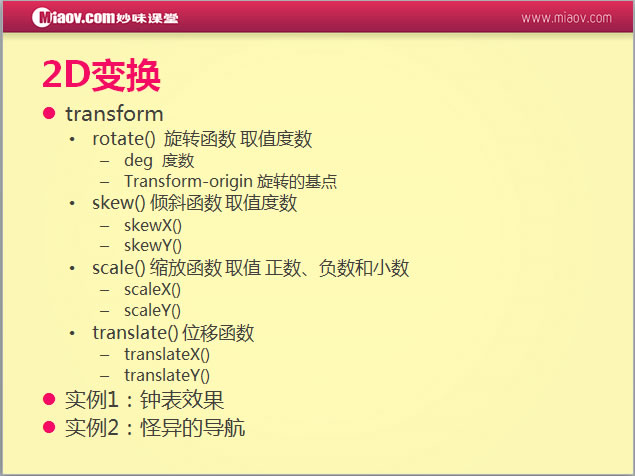
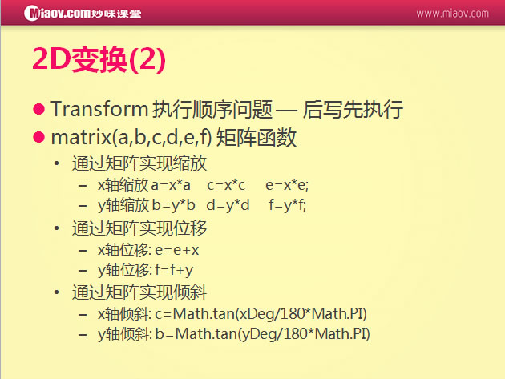
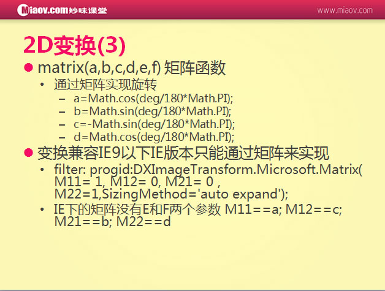

transform:rotate(?deg)旋转 deg:单位度
与transform搭对的样式变换基点transform-origin
transform:scale()缩放，（1），没有单位（2），原始是1（3），缩放还分x和y：transform:scaleX() transform:scaleY()
skew(?deg)斜切有单位deg skew默认是以X轴斜切的，skewX（）和skewY（）
transform(?px)位移有单位px transform默认是以X轴位移的，transformX（）和transformY（）

后写先执行

matrix(a,b,c,d,e,f)矩阵函数